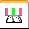

Sensors tabDisplays sensors you have defined and allows you to create new sensors.
- Minimum Distance Sensor
-
Displays the Minimum Distance command bar so you can define a minimum distance between two elements that you want to track as a sensor. When you click the Close button on the command bar, the Minimum Distance Sensor Parameters dialog box displays so you can define the remaining minimum distance sensor parameters.
- Variable Sensor
-
Displays the Variable Table dialog box and the Variable Sensor Parameters dialog box so you can define the variable you want to track as a sensor. To define a variable as a sensor, first select the variable row you want to track. Then, on the Variable Sensor Parameters dialog box, click the Add Variable button. The variable value is added to the Current Value box in the Variable Sensor Parameters dialog box. You can then define the remaining variable sensor parameters.
- Sheet Metal Sensor
-
Displays the Sheet Metal Sensor command bar so you can define the faces and edge sets you want to track as a sensor. When you click the Finish button on the command bar, the Sheet Metal Sensor Parameters dialog box displays so you can define the remaining sensor parameters. This sensor type is available only for sheet metal documents.
- Surface Area Sensor
-
Displays the Surface Area Sensor command bar so you can define the faces you want to track as a sensor. When you click the Accept (checkmark) button on the command bar, the Surface Area Sensor Parameters dialog box displays so you can define the remaining sensor parameters. This sensor type is available only for part and sheet metal documents.
- Custom Sensor
-
Displays the Custom Sensor DLL dialog box so you can define the DLL and user function you want. After you define the DLL and user function, and click OK, the Custom Sensor Parameters dialog box displays so you can define the sensor parameters.
- Sensor Display Area
-
Displays completed sensors you have defined for the document.
When a change to the model exceeds a defined sensor threshold limit, a red border appears around the sensor and an alarm indicator is displayed.
How do I
Create a custom sensorCreate a minimum distance sensor
Responding to sensor alarms
Create a sheet metal sensor
Create a surface area sensor
Create a variable sensor
Learn more
SensorsLook up more details
Sensor AssistantMinimum Distance Sensor Parameters dialog box
Sheet Metal Sensor command bar
Sheet Metal Sensor Parameters dialog box
Surface Area Sensor command bar
Surface Area Sensor dialog box
Variable Sensor Parameters dialog box
Custom Sensor Parameters dialog box
Custom Sensor DLL Dialog Box